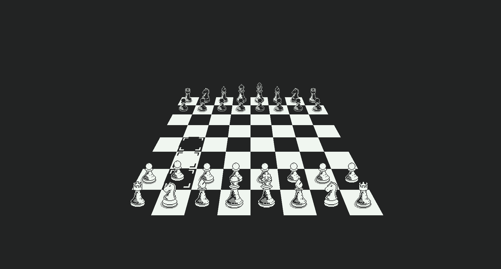

v1.1.0 · windows · java 25
A chess desktop application built in the spirit of early computer chess. 3D perspective board. Retro terminal interface. UCI engine support.
features
Play on a rendered 3D board with a classic isometric perspective. Toggle to 2D any time from the settings menu.
Menus and settings rendered as a retro terminal overlay.
Plug in Stockfish 18 or Berserk 14 as opponents. Engines are an optional install component.
Blitz, Rapid, and Classic presets. Timer shown in the terminal readout at the bottom of the screen.
Legal move highlights and last-move guides. Toggle display guides on or off from the graphics menu.
Bundled Java 25 runtime. No JDK, no PATH changes, no administrator prompt. Installs per-user.
opponents
| opponent | type | notes |
|---|---|---|
| crt easy | built-in | Built-in minimax engine, gentler play. Always available. |
| crt hard | built-in | Built-in engine at full search depth. Always available. |
| stockfish | uci engine | Stockfish 18. Requires the optional engines component at install time. |
| berserk | uci engine | Berserk 14. Requires the optional engines component at install time. |
| local | two players | Hotseat (two humans), no AI. Always available. |
Self-contained installer. No Java required. Per-user install, no admin prompt.